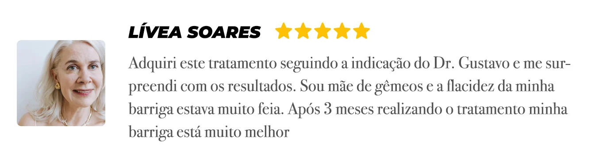

Se você responder sim para alguma das perguntas abaixo, eu recomendo que você leia essa apresentação ainda hoje.
1. Você está sofrendo com barriga flácida, a pele do “tchauzinho” abaixo dos braços ou papada?
2. Sente que seu corpo está ficando menos atraente com o passar dos anos e vê sua auto estima diminuir todos os dias?
3. Já tentou alguma solução para tratar a flacidez e envelhecimento precoce, mas não teve resultados?
Se para alguma dessas perguntas você disse sim, esse breve artigo foi feito especialmente para você.
Isso porque nas linhas abaixo eu vou mostrar e provar que você está sendo envenenada, desde criança, para desenvolver uma pele enrugada e flácida…
E digo mais, esse veneno está guardado na cozinha da sua casa, envenenando não só você, como também toda a sua família silenciosamente….
Após alguns anos sendo exposta a essa toxina, as consequências podem ser irreversíveis e sérias.
Não estou falando apenas de flacidez ou marcas de idade…
Essa terrível e silenciosa toxina que está alojada agora no seu corpo pode desenvolver até mesmo doenças terríveis como o câncer.
E nas linhas abaixo vou mostrar como você vai desintoxicar o seu corpo de forma natural e ainda restaurar sua pele dos danos causados por essa substância.
ATENÇÃO!!!
ESSE ARTIGO PODE SAIR DO AR AINDA HOJE, CASO TENHA INTERESSE LEIA IMEDIATAMENTE.
Leia essa carta aberta até o final e eu garanto que você vai saber exatamente o que fazer para acabar definitivamente com esse problema e conquistar o corpo e a autoestima que você busca e merece.
- Estou falando de eliminar essa pele flácida que esteja incomodando ou até mesmo impedindo você de viver a sua vida…
- Curtir na praia com aquele biquíni que está guardado no armário…
- Usar aquele short, sem medo do julgamento por causa da flacidez nas coxas…
- Recuperar aquela barriguinha lisa que as mulheres tanto amam em si mesmas…
- Ou simplesmente acabar com aquela papada que você pensava que só teria solução com cirurgia.
Isso é totalmente possível e eu vou mostrar como abaixo.
Outras pessoas que leram a matéria já foram ajudadas.
Muito prazer, eu sou o Gustavo Henrique, especialista em rejuvenescimento e tratamento da pele…
Nos últimos 8 anos eu dediquei a minha carreira na busca por uma solução para problemas de envelhecimento e principalmente flacidez.
Eu já já explico porque despertei esse interesse, mas antes de tudo você precisa saber que, na minha busca, eu fracassei muitas vezes com soluções falsas…
Soluções que talvez você também já tenha tentado.
Testei colágeno, pílulas vendidas na internet, cremes, drenagem linfática e, até mesmo botox…
Mas entre tantas soluções existentes no Brasil, nenhuma foi capaz de devolver a autoestima da mulher mais importante da minha vida: A minha esposa.
O nome dela é Samanta e quando tínhamos 19 anos ela engravidou de gêmeos. Foi uma gravidez linda, mas as consequências de ganhar quase 28 quilos foram terríveis.
Tratar a flacidez pós parto já é difícil, mas eu não contava com uma coisa…
O corpo da minha esposa, o meu e provavelmente o seu está infestado por essa terrível substância tóxica que impede sua pele de absorver os principais nutrientes.
As consequências foram: Um corpo cheio de flacidez e uma mulher deprimida sem autoestima.
E após tentar absolutamente de tudo para restaurar o corpo da minha esposa e fracassar com todas as alternativas eu iniciei uma profunda busca por uma solução capaz de tratar a sua flacidez e devolver o sorriso do seu rosto.
Foram anos de procura, lendo dezenas de livros, indo a incontáveis conferências médicas, para finalmente encontrar uma solução em uma feira na zona sul de sul de São Paulo.
Solução essa que estava o tempo todo bem debaixo do meu nariz!
Foi em uma convenção de dermatologia na Universidade de São paulo (USP), onde conheci o especialista em saúde da pele, Doutor Jean.
Essa solução que vou compartilhar com você está nas linhas abaixo, mas antes…
Você precisa entender como essa substância tóxica que você guarda na cozinha está roubando a sua juventude.

Essa substância está envenenando e roubando a elasticidade da sua pele desde quando você era criança, mas só agora as consequências começaram a aparecer…
Ela provavelmente está presente na sua cozinha neste exato momento e não tem como fugir dela…
Pode estar nas suas frutas preferidas, maçãs, bananas, laranjas…
Pode, inclusive, estar no arroz, feijão e até mesmo no trigo…
E com certeza está em grande quantidade no seu corpo, impedindo que o colágeno seja sintetizado pelo seu organismo.
Estou falando das toxinas do agrotóxico.
São 115 elementos químicos, até mesmo radioativos que são despejados nos nossos alimentos durante anos…
Essas substâncias tóxicas se acumulam ano após ano trazendo consequências mais sérias do que você imagina.
Impedindo que o colágeno e o ácido hialurônico sejam processados pelo seu corpo…
Enquanto essas toxinas estiverem presas dentro de você, não importa quanto colágeno você tome, quanto serum você passe, nem mesmo quanto ácido hialurônico você compre.
Nada vai funcionar para tratar flacidez e rugas.
E digo mais!
A flacidez e surgimento de rugas é apenas o começo de um problema que se torna cada vez mais sério…
Isso porque altas quantidades dessas substâncias no organismo por longos períodos de tempo podem desenvolver problemas respiratórios como sinusite, rinite e até mesmo alguns tipos de câncer.
Nesse momento, eu digo para você o mesmo que disse para minha esposa anos atrás: A culpa não é sua.
A indústria alimentícia abusa cada vez mais desses recursos buscando mais lucros e quem paga a conta é você!